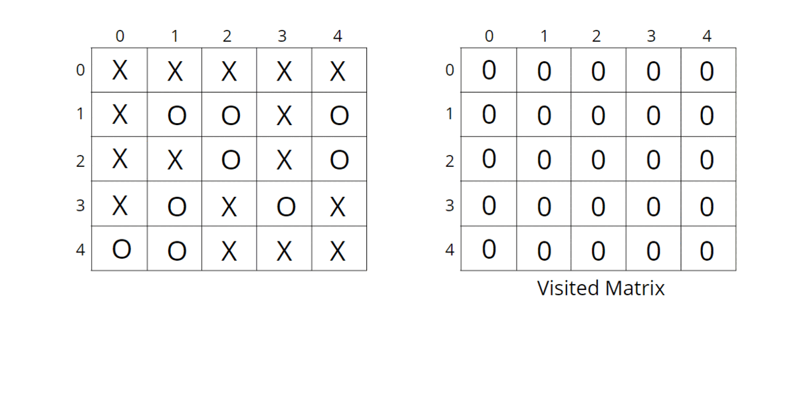

Problem Statement: Given a matrix mat of size N x M where every element is either ‘O’ or ‘X’. Replace all ‘O’ with ‘X’ that is surrounded by ‘X’. An ‘O’ (or a set of ‘O’) is considered to be surrounded by ‘X’ if there are ‘X’ at locations just below, just above just left, and just right of it.
Examples:
Example 1:
Input: n = 5, m = 4
Output:
Example 2:
Input: n = 5, m = 4
Output:
Solution
Disclaimer: Don't jump directly to the solution, try it out yourself first.
Intuition:.
The boundary elements in the matrix cannot be replaced with ‘X’ as they are not surrounded by ‘X’ from all 4 directions. This means if ‘O’ (or a set of ‘O’) is connected to a boundary ‘O’ then it can’t be replaced with ‘X’.
The intuition is that we start from boundary elements having ‘O’ and go through its neighboring Os in 4 directions and mark them as visited to avoid replacing them with ‘X’.
Approach:
We can follow either of the traversal techniques as long as we are starting with a boundary element and marking all those Os connected to it. We will be solving it using DFS traversal, but you can apply BFS traversal as well.
DFS is a traversal technique that involves the idea of recursion.. DFS goes in-depth, i.e., traverses all nodes by going ahead, and when there are no further nodes to traverse in the current path, then it backtracks on the same path and traverses other unvisited nodes.
The algorithm steps are as follows:
- Create a corresponding visited matrix and initialize it to 0.
- Start with boundary elements, once ‘O’ is found, call the DFS function for that element and mark it as visited. In order to traverse for boundary elements, you can traverse through the first row, last row, first column, and last column.
- DFS function call will run through all the unvisited neighboring ‘O’s in all 4 directions and mark them as visited so that they are not converted to ‘X’ in the future. The DFS function will not be called for the already visited elements to save time, as they have already been traversed.
- When all the boundaries are traversed and corresponding sets of ‘O’s are marked as visited, they cannot be replaced with ‘X’. All the other remaining unvisited ‘O’s are replaced with ‘X’. This can be done in the same input matrix as the problem talks about replacing the values, otherwise tampering with data is not advised.
Consider the following illustration to understand how DFS traverses the matrix and replaces O’s with X’s.

How do set boundaries for 4 directions?
The 4 neighbors will have the following indexes:
Now, either we can apply 4 conditions or follow the following method.
From the above image, it is clear that the delta change in the row is -1, +0, +1, +0. Similarly, the delta change in the column is 0, +1, +0, -1. So we can apply the same logic to find the neighbors of a particular pixel (<row, column>).
Code:
#include <bits/stdc++.h>
using namespace std;
class Solution{
private:
void dfs(int row, int col, vector<vector<int>> &vis,
vector<vector<char>> &mat, int delrow[], int delcol[]) {
vis[row][col] = 1;
int n = mat.size();
int m = mat[0].size();
// check for top, right, bottom, left
for(int i = 0;i<4;i++) {
int nrow = row + delrow[i];
int ncol = col + delcol[i];
// check for valid coordinates and unvisited Os
if(nrow >=0 && nrow <n && ncol >= 0 && ncol < m
&& !vis[nrow][ncol] && mat[nrow][ncol] == 'O') {
dfs(nrow, ncol, vis, mat, delrow, delcol);
}
}
}
public:
vector<vector<char>> fill(int n, int m,
vector<vector<char>> mat)
{
int delrow[] = {-1, 0, +1, 0};
int delcol[] = {0, 1, 0, -1};
vector<vector<int>> vis(n, vector<int>(m,0));
// traverse first row and last row
for(int j = 0 ; j<m;j++) {
// check for unvisited Os in the boundary rows
// first row
if(!vis[0][j] && mat[0][j] == 'O') {
dfs(0, j, vis, mat, delrow, delcol);
}
// last row
if(!vis[n-1][j] && mat[n-1][j] == 'O') {
dfs(n-1,j,vis,mat, delrow, delcol);
}
}
for(int i = 0;i<n;i++) {
// check for unvisited Os in the boundary columns
// first column
if(!vis[i][0] && mat[i][0] == 'O') {
dfs(i, 0, vis, mat, delrow, delcol);
}
// last column
if(!vis[i][m-1] && mat[i][m-1] == 'O') {
dfs(i, m-1, vis, mat, delrow, delcol);
}
}
// if unvisited O then convert to X
for(int i = 0;i<n;i++) {
for(int j= 0 ;j<m;j++) {
if(!vis[i][j] && mat[i][j] == 'O')
mat[i][j] = 'X';
}
}
return mat;
}
};
int main(){
vector<vector<char>> mat{
{'X', 'X', 'X', 'X'},
{'X', 'O', 'X', 'X'},
{'X', 'O', 'O', 'X'},
{'X', 'O', 'X', 'X'},
{'X', 'X', 'O', 'O'}
};
Solution ob;
// n = 5, m = 4
vector<vector<char>> ans = ob.fill(5, 4, mat);
for(int i = 0;i < 5;i++) {
for(int j = 0;j < 4;j++) {
cout<<ans[i][j]<<" ";
}
cout<<"\n";
}
return 0;
}
Output:
X X X X
X X X X
X X X X
X X X X
X X O O
Time Complexity: O(N) + O(M) + O(NxMx4) ~ O(N x M), For the worst case, every element will be marked as ‘O’ in the matrix, and the DFS function will be called for (N x M) nodes and for every node, we are traversing for 4 neighbors, so it will take O(N x M x 4) time. Also, we are running loops for boundary elements so it will take O(N) + O(M).
Space Complexity ~ O(N x M), O(N x M) for the visited array, and auxiliary stack space takes up N x M locations at max.
import java.util.*;
class Solution{
static void dfs(int row, int col,int vis[][],
char mat[][], int delrow[], int delcol[]) {
vis[row][col] = 1;
int n = mat.length;
int m = mat[0].length;
// check for top, right, bottom, left
for(int i = 0;i<4;i++) {
int nrow = row + delrow[i];
int ncol = col + delcol[i];
// check for valid coordinates and unvisited Os
if(nrow >=0 && nrow <n && ncol >= 0 && ncol < m
&& vis[nrow][ncol] == 0 && mat[nrow][ncol] == 'O') {
dfs(nrow, ncol, vis, mat, delrow, delcol);
}
}
}
static char[][] fill(int n, int m, char mat[][])
{
int delrow[] = {-1, 0, +1, 0};
int delcol[] = {0, 1, 0, -1};
int vis[][] = new int[n][m];
// traverse first row and last row
for(int j = 0 ; j<m;j++) {
// check for unvisited Os in the boundary rws
// first row
if(vis[0][j] == 0 && mat[0][j] == 'O') {
dfs(0, j, vis, mat, delrow, delcol);
}
// last row
if(vis[n-1][j] == 0 && mat[n-1][j] == 'O') {
dfs(n-1,j,vis,mat, delrow, delcol);
}
}
for(int i = 0;i<n;i++) {
// check for unvisited Os in the boundary columns
// first column
if(vis[i][0] == 0 && mat[i][0] == 'O') {
dfs(i, 0, vis, mat, delrow, delcol);
}
// last column
if(vis[i][m-1] == 0 && mat[i][m-1] == 'O') {
dfs(i, m-1, vis, mat, delrow, delcol);
}
}
// if unvisited O then convert to X
for(int i = 0;i<n;i++) {
for(int j= 0 ;j<m;j++) {
if(vis[i][j] == 0 && mat[i][j] == 'O')
mat[i][j] = 'X';
}
}
return mat;
}
public static void main(String[] args)
{
char mat[][] = {
{'X', 'X', 'X', 'X'},
{'X', 'O', 'X', 'X'},
{'X', 'O', 'O', 'X'},
{'X', 'O', 'X', 'X'},
{'X', 'X', 'O', 'O'}};
// n = 5, m = 4
Solution ob = new Solution();
char[][] ans = ob.fill(5, 4, mat);
for(int i = 0;i < 5;i++) {
for(int j = 0;j < 4;j++) {
System.out.print(ans[i][j] + " ");
}
System.out.println();
}
}
}
Output:
X X X X
X X X X
X X X X
X X X X
X X O O
Time Complexity: O(N) + O(M) + O(NxMx4) ~ O(N x M), For the worst case, every element will be marked as ‘O’ in the matrix, and the DFS function will be called for (N x M) nodes and for every node, we are traversing for 4 neighbors, so it will take O(N x M x 4) time. Also, we are running loops for boundary elements so it will take O(N) + O(M).
Space Complexity ~ O(N x M), O(N x M) for the visited array, and auxiliary stack space takes up N x M locations at max.
Special thanks to Vanshika Singh Gour for contributing to this article on takeUforward. If you also wish to share your knowledge with the takeUforward fam, please check out this article. If you want to suggest any improvement/correction in this article please mail us at write4tuf@gmail.com